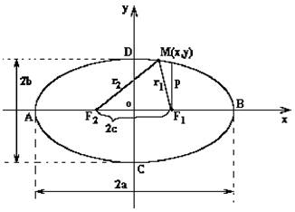

Эллипс

Эллипс – геометрическое место всех точек  , для которых сумма расстояний до
двух заданных точек
, для которых сумма расстояний до
двух заданных точек  и
и  (называемых
фокусами эллипса) постоянна и равна
(называемых
фокусами эллипса) постоянна и равна  ,().
,().
, для которых сумма расстояний до
двух заданных точек и (называемых
фокусами эллипса) постоянна и равна ,(). и ,
,
Каноническое
уравнение эллипса
-
каноническое уравнение эллипса, точка  -
центр;
-
центр;
-
центр; точки  - вершины;
- вершины;
- вершины;точки , – фокусы;
, – фокусы;  - фокусное расстояние,
- фокусное расстояние, и
и  -
большая и малая оси;
-
большая и малая оси; и
и  -
большая и малая полуоси;
-
большая и малая полуоси;
Эксцентриситет
эллипса
Экcцентриситет
эллипса, при совпадении его осей с координатными осями
-
эксцентриситет эллипса, ;
 Уравнение правой и
левой директрис эллипса
-
уравнения правой и левой директрис;
Уравнение правой и
левой директрис эллипса
-
уравнения правой и левой директрис;  Фокальный параметр
эллипса
-
фокальный параметр.
Фокальный параметр
эллипса
-
фокальный параметр. Параметрическое
уравнение эллипса
-
параметрические уравнения эллипса;
Параметрическое
уравнение эллипса
-
параметрические уравнения эллипса;( - угол, образованный
подвижным радиусом с положительным направлением оси
- угол, образованный
подвижным радиусом с положительным направлением оси  );
);
- угол, образованный
подвижным радиусом с положительным направлением оси ); Уравнение эллипса в
полярных координатах
-
уравнение эллипса в полярных координатах, связанных с фокусом,
Уравнение эллипса в
полярных координатах
-
уравнение эллипса в полярных координатах, связанных с фокусом,